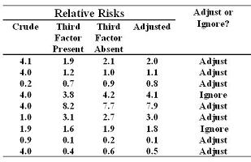

Bias-Variance Tradeoff
Lead Author(s): Jeff Martin, MD
Bias-Variance Tradeoff
The tension is between trying to get the valid answer, or the least biased answer without having to take unnecessary penalties in precision. This is known as the bias-variance tradeoff, and the methodologic literature is inconsistent on the best way to handle this, mainly because there is no one correct approach. This leaves the investigator on his/her own. The only scientifically rigorous approach to this would be to create two lists of potential confounders prior to conducting the analysis.
A List of Potential Confounders
A-List: Those factors for which you will accept the adjusted result no matter how small the difference from the crude.
- Factors you know or believe are confounders.
- Example: Age, when looking at the association between hypertension and coronary artery disease.
B List of Potential Confounders
B-List: Those factors for which you will accept the adjusted result only if it meaningfully differs from the crude (with some pre-specified difference, e.g., 10%).
- Factors you are less sure about causing confounding.
- These might be factors which you think may be confounders but you are not sure about.
Using the A List and the B List
Always putting all factors on A list may seem conservative,
- but not necessarily the right thing to do in that there may be a penalty in statistical precision.
For some analyses, you may have no factors on A list.
- For other analyses, you may have no factors on B list.
Recommendation: NOT many variables on A list
- Put just about everything on the B list.
Adjusting or Ignoring B List Factors
Here are a few numerical examples showing when to adjust and when not to adjust for factors on the B list.

1) Column 1 is the crude estimate.
2) Columns 2 and 3 are the stratum-specific estimates.
3) Column 4 is the adjusted estimate, the weighted average of the stratum specific estimates.
- If the crude is 4.0 and the adjusted is 2, you would always report the adjusted estimate.
- If the crude is 4.0 and the adjusted is 1.1, you would definitely report the adjusted.
- If the crude is 0.2 and the adjusted is 0.8, you would definitely report the adjusted.
- If the crude is 4.0 and the adjusted is 4.1, you would not adjust. You would ignore this in favor of the crude estimate.
- If the crude is 1.9 and the adjusted is 1.8, you would not adjust.